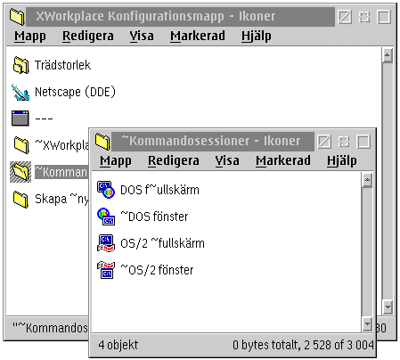

Detta g”rs med anv„ndningen av en separat Konfigurationsmapp, vilken liknar vilken som helst normal WPS mapp. Installationsskriptet placerade den i "&xwp;" mappen p† ditt Skrivbord, men du kan flytta den vart som helst om du vill.
Vad som helst som du l„gger i den h„r konfigurationsmappen kommer omedelbart att upptr„da i kontextmenyerna hos alla mappar p† ditt system.
L†t oss klarl„gga det genom att ta en titt p† den f”rinst„llda konfigurationen igen:
Den f”rkonfigurerade mappen kommer att se ut s† h„r:

Som du kan se, motsvarar mapparna och programobjektet i &xwp;'s Konfigurationsmapp till posterna i kontextmenyn. S† om du l„gger till n†got i Konfigurationsmappen eller tar bort n†got objekt fr†n den, kommer det omedelbart att p†verka alla mappars kontextmenyer.
Emellertid, aktionen som &xwp; utf”r vid val av en kontextmenypost beror p† typen av objekt som korresponderar till menyposten. F”r detaljer om hur det h„r fungerar, var v„nlig g† till &xwp;'s installationsmapp och v„lj "Hj„lp" f”r Konfigurationsmappen vilket du kommer att hitta d„r.
S† enkelt som det kan verka, „r det kombinerade mapp/objekt uppl„gget hos &xwp;'s konfigurationsmapp v„ldigt kraftfull. Du kan l„gga till all dina favoritprogram, mallar, och datafiler h„r vilka kan vara meningsfulla att exekvera i godtycklig katalog.
Om du k„nner till hur REXX programmeras, har du det „nd† b„ttre f”rsp„nt: du kan skriva dina egna skript
som manipulerar WPS, skapa programobjekt f”r dom och l„gga dessa i konfigurationsmappen.
P† sidan
"Ofta St„llda Fr†gor (FAQ)", kan du hitta mer om det h„r.